Transfer Learning in der Sprachverarbeitung
von Simon Wolf, Tim Staudinger und Miguel Meindl
Abstract
Die Sprachverarbeitung ist ein grundlegender Aspekt der künstlichen Intelligenz (KI) und hat in den letzten Jahren beträchtliche Fortschritte erzielt. Eine vielversprechende Methode zur Verbesserung der Leistung von Sprachmodellen ist Transfer Learning. Dies ermöglicht es, vortrainierte Modelle auf eine neue Aufgabe anzuwenden, indem das bereits erlernte Wissen auf eine verwandte Aufgabe angewendet wird.
Der Podcast bietet eine oberflächliche Einführung in das Thema, um fachfremde Zuhörer mit den grundlegenden Konzepten vertraut zu machen. Es wird erklärt, wie Transfer Learning funktioniert und genutzt werden kann. Außerdem wird ein Überblick über verschiedene Anwendungsfälle gegeben und die Herausforderungen von Transfer Learning beleuchtet. Zudem wird der Einfluss der Datenmenge und Qualität auf das Ergebnis diskutiert.
Der Fachvortrag liefert einen tieferen Einblick in das Thema. Hier wird zunächst versucht, die verschiedenen Aspekte von Transfer Learning einzuordnen. Die Herausforderungen zur Vermeidung von negativem Transfer werden herausgearbeitet und potenzielle Lösungen aufgezeigt. Anschließend werden die verschiedenen Kategorien elaboriert, um einen Überblick zu geben. Modernere Ansätze mit Hilfe von Deep Learning werden vorgestellt und deren Vorteile aufgezeigt. Anschließend wird der Ansatz des Modelltransfers näher erläutert.
Im Schlussteil der Arbeit wird anhand eines konkreten Beispiels gezeigt, wie Transfer Learning angewandt werden kann. Hierfür wird das Sprachmodell BERT auf den Anwendungsfall der Fake-News-Erkennung trainiert. Die einzelnen Phasen dieses Prozesses werden im Detail erläutert und mit Codebeispielen veranschaulicht.
1. Einleitung und Motivation
In der heutigen digitalen Zeit hat die Spracherkennung einen enormen Einfluss auf unser tägliches Leben. Von virtuellen Assistenten über Sprachbefehle in mobilen Geräten bis hin zu automatisierten Kundenservice-Systemen – die Fähigkeit, menschliche Sprache zu verstehen und zu verarbeiten, hat zahlreiche Anwendungen revolutioniert. Doch die Entwicklung präziser und effizienter Spracherkennungssysteme stellt nach wie vor eine Herausforderung dar.
Die Anwendungsmöglichkeiten von Transfer Learning in der Spracherkennung sind vielfältig. Egal ob es darum geht, Sprachbefehle in Smart-Home-Geräten zu erkennen, Transkriptionen von Audioaufnahmen zu erstellen oder Sprachanrufe automatisch zu analysieren, Transfer Learning bietet eine effektive Methode, um maßgeschneiderte Modelle für spezifische Aufgaben zu entwickeln.
Transfer Learning bietet in der Spracherkennung eine Reihe von Vorteilen. Anstatt Modelle von Grund auf neu zu trainieren kann auf bereits existierende Modelle zurückgegriffen werden. Dadurch wird nicht nur die Trainingszeit erheblich verkürzt, sondern auch der Bedarf an umfangreichen Datenmengen reduziert.
Des Weiteren ermöglicht es die Nutzung von vortrainiertem Wissen, das bereits in einem anderen Kontext erworben wurde. Dieses Wissen kann auf die Spracherkennung angewendet werden, um eine bessere Anpassung an spezifische Aufgaben zu erreichen. Dadurch wird die Genauigkeit der Spracherkennungssysteme verbessert, selbst wenn die verfügbare Datenmenge begrenzt ist.
Die Idee von Transfer Learning hat ihre Wurzeln in der Künstlichen Intelligenz und dem maschinellen Lernen. In den letzten Jahrzehnten wurden verschiedene Ansätze und Techniken entwickelt, um Transfer Learning zu ermöglichen. Diese Fortschritte haben die Spracherkennung maßgeblich beeinflusst.
2. Stand der Forschung
Doch wie sieht der aktuelle Stand der Forschung aus? Welche neuen Ansätze und Techniken wurden entwickelt, um die Effizienz und Genauigkeit von Spracherkennungssystemen weiter zu verbessern? Im nachfolgenden Abschnitt wird genauer auf diese Themen eingegangen.
In den letzten Jahren hat die Forschung intensiv daran gearbeitet, Transfer Learning in der Spracherkennung voranzutreiben. Ein herausragendes Beispiel für ein erfolgreiches vortrainiertes Sprachmodell ist ChatGPT. Durch den Einsatz von vortrainierten Modellen als Ausgangspunkt können Spracherkennungsmodelle von dem breiten Wissen profitieren, das in Modellen wie beispielsweise ChatGPT vorhanden ist. Dies ermöglicht eine verbesserte Sprachverarbeitung. Durch die Übertragung des vortrainierten Wissens auf spezifische Spracherkennungsaufgaben können Modelle schneller und genauer lernen, wodurch die Genauigkeit der Spracherkennungssysteme erhöht wird.
Ein weiterer vielversprechender Ansatz ist die Kombination von Transfer Learning mit Active Learning. Active Learning ermöglicht es, gezielt unsichere Beispiele auszuwählen, um das Modell iterativ zu trainieren. Durch den gezielten Einsatz von Transfer Learning in Kombination mit Active Learning können Spracherkennungsmodelle schneller und effizienter lernen. Das Modell kann von bereits gelernten Aufgaben profitieren und sich schneller an neue Spracherkennungsaufgaben anpassen.
Darüber hinaus wird als weiterer Ansatz Transfer Learning mit anderen Techniken wie beispielsweise Reinforcement Learning kombiniert. Reinforcement Learning-Algorithmen können eingesetzt werden, um die Interaktion mit dem Spracherkennungssystem zu verbessern und es an spezifische Nutzerpräferenzen anzupassen. Eine weitere Möglichkeit stellt die Kombination mit Generative Adversarial Networks (GANs) dar. Ziel dieses Ansatzes ist es, die Datenmenge durch künstlich generierte Texte zu erhöhen. Diese Kombinationen eröffnen neue Möglichkeiten, die Leistungsfähigkeit von Spracherkennungssystemen zu steigern.
Ein weiterer vielversprechender Aspekt ist die Erweiterung von Transfer Learning auf mehrsprachige Szenarien. Indem Modelle auf verschiedenen Sprachen trainiert und dann auf neue Sprachen übertragen werden, kann die Effizienz und Genauigkeit der Spracherkennung in verschiedenen Sprachen verbessert werden. Dies ist besonders relevant in globalen Umgebungen, in denen mehrsprachige Unterstützung von entscheidender Bedeutung ist.
Der aktuelle Stand der Forschung im Bereich Transfer Learning in der Spracherkennung zeigt das Potenzial dieser Technik. Durch den Einsatz von vortrainierten Sprachmodellen wie ChatGPT, kombiniert mit Active Learning, Reinforcement Learning und anderen Techniken, können Spracherkennungssysteme effizienter, präziser und anpassungsfähiger trainiert werden.
3. Methoden
3.1 Definition
Die Motivation für Transfer Learning basiert auf der Idee des "Lernens zu lernen", die besagt, dass die Fähigkeit zu Lernen von Grund auf oft begrenzt ist und daher so viel wie möglich aus früheren Erfahrungen genutzt werden sollte.
| 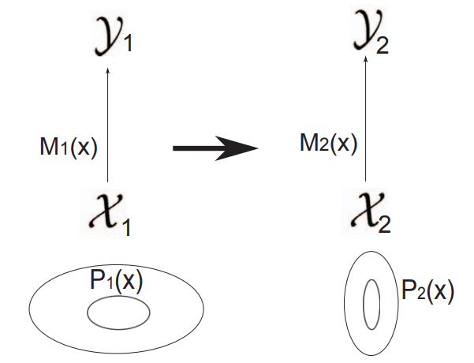 |
|---|
| Abbildung 1: Visualisierung von Transfer Learning: |
| Die linke Seite stellt das Quellsystem dar, die rechte Seite das Zielsystem. X1 und X2 sind die Featureräume, Y1 und Y2 die Labelräume der jeweiligen Modelle M1 und M2. P1(X) und P2(X) sind die jeweiligen Wahrscheinlichkeitsverteilungen der Features. |
Es gibt verschiedene Kategorien des Transfer Learnings, die je nach Beziehung zwischen dem bereits Gelernten (Quelle) und dem Neuen (Ziel) entwickelt wurden. Auf einige davon wird im späteren Verlauf im Kapitel "Kategorisierung" noch eingegangen. Es ist allerdings zu Erwähnen, dass die Einteilung in diese Kategorien nicht immer eindeutig ist. Des Weiteren ist die Zugehörigkeit dieser zum Transfer Learning teilweise umstritten.
3.2 Herausforderungen
Die mit Abstand größte Herausforderung von Transfer Learning besteht im simplen Konzept: Positiven Transfer erzeugen, negativen Transfer vermeiden.
Die Vorhersagefähigkeit von Transfermethoden hängt von der semantischen Ähnlichkeit zwischen den Aufgabenstellungen im Quell- und Zielsystem ab. Bei einer starken Beziehung und einer geeigneten Ausnutzung durch die Transfermethode kann die Vorhersagekraft in der Zielaufgabe deutlich verbessert werden. Ist die Beziehung zwischen den Aufgaben jedoch unzureichend oder wird sie von der Transfermethode nicht optimal genutzt, kann die Leistung abnehmen.
Um negativen Transfer zu vermeiden, müssen Transfermethoden vorsichtig sein und die Beziehung zwischen Quell- und Zielaufgabe berücksichtigen. Vorsichtige Ansätze führen möglicherweise zu geringerem positivem Transfer, bieten jedoch Schutz vor negativem Transfer. Aggressive Ansätze erzielen möglicherweise größere Leistungssteigerungen, bergen jedoch auch das Risiko von negativem Transfer, wenn die Quellaufgabe nicht gut zur Zielaufgabe passt.
3.2.1 Ablehnung schlechter Informationen
Eine Möglichkeit negativen Transfer zu vermeiden besteht darin, dass schädliche Informationen der Quellaufgabe während des Lernens der Zielaufgabe erkannt und abgelehnt werden. Eine Methode, um dies zu erreichen, ist das optionenbasierte Transfer Learning im Bereich des Reinforcement Learning, bei dem der Agent basierend auf der Leistung bestimmte Optionen auswählt oder ablehnt. Ein weiterer Ansatz ist der KBKR-Ratschlag-Algorithmus (Advice-Taking Algorithm), der die Ratschläge der Quellaufgabe als weiche Einschränkung berücksichtigt. Zusätzlich wurden Methoden zur Erkennung von negativem Transfer entwickelt, z.B. durch die Verwendung eines Hyperpriors, dessen Varianz mit der Unähnlichkeit der Aufgaben korreliert. Dadurch kann entschieden werden, ob überhaupt ein Transfer stattfinden sollte.
3.2.2 Auswahl der Quellaufgabe
Um negativen Transfer zu vermeiden, können mehrere Quellaufgaben zur Auswahl stehen. Eine Möglichkeit besteht darin, die Aufgaben nach Schwierigkeitsgrad zu ordnen und eine Quellaufgabe auszuwählen, die nur moderat schwieriger ist als die Zielaufgabe. Eine andere Methode ist die Suche nach ähnlichen Aufgaben mit Hilfe von Graphenrepräsentationen. Zudem kann auch die Auswahl aus Kandidatenlösungen einer Quellaufgabe anstelle von Quellaufgaben selbst in Betracht gezogen werden. Dieser Ansatz ermöglicht die Berücksichtigung der Komplexität der Modelle und die Auswahl einer geeigneten Auflösung für den Transfer.
| 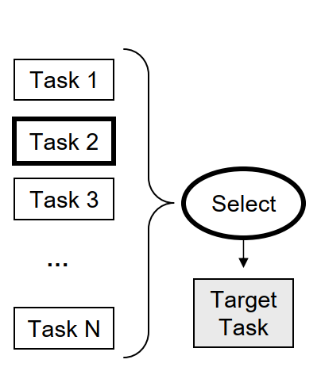 |
|---|
| Abbildung 2: Visualisierung der Auswahl der Quellaufgabe: |
| Eine Möglichkeit, negativen Transfer zu vermeiden, besteht darin, eine geeignete Quellaufgabe auszuwählen, von der der Transfer erfolgen soll. In diesem Beispiel wird Task 2 als am Relevantesten ausgewählt. |
3.2.3 Modellierung von Aufgabenähnlichkeit
Bei der Auswahl von Quellaufgaben kann es vorteilhaft sein, mehrere Aufgaben zu berücksichtigen, anstatt nur eine auszuwählen. Einige Ansätze modellieren explizit die Beziehungen zwischen den Aufgaben und integrieren diese Informationen in die Transfermethode. Dies ermöglicht eine bessere Nutzung des Wissens aus den Quellaufgaben und verringert das Risiko von negativem Transfer. Beispiele für solche Ansätze sind die Entwicklung von Ähnlichkeitsmaßen für Aufgaben im Bereich des Reinforcement Learning, die Konstruktion eines Graphen zur Darstellung der Aufgaben und die Verwendung von Kernel-Methoden zur Berechnung eines Ähnlichkeitskerns für die Zielaufgabe.
| 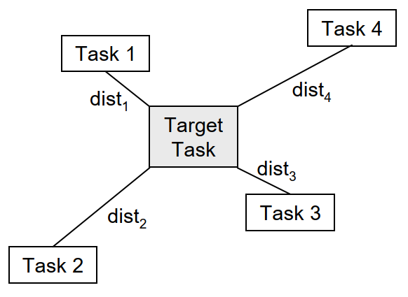 |
|---|
| Abbildung 3: Modellierung von Aufgabenähnlichkeit: |
| Eine andere Möglichkeit, negativen Transfer zu vermeiden, besteht darin, das Verhältnis zwischen den Quellaufgaben und der Zielaufgabe zu modellieren und das Wissen unter Berücksichtigung dieser Beziehungen zu kombinieren. |
3.3 Kategorisierung
Die folgende Tabelle gibt einen Überblick über die Gebiete des Transferlernens.
| 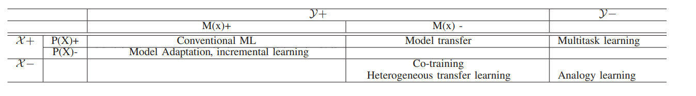 |
|---|
| Abbildung 4: Überblickstabelle über die Kategorien von Transfer Learning: |
| Variable | Beschreibung |
|---|---|
| X: | Feature space (Audio-, Text-, Bilddaten, …) |
| y: | Label space (Phoneme, Kategorien, …) |
| M(X): | Model |
| P(X): | Verteilung der Features |
| +: | Daten und Tasks sind gleich für Quell- und Zieldomäne |
| -: | Daten und Tasks sind unterschiedlich für Quell- und Zieldomäne |
3.3.1 Modelladaption und inkrementelles Lernen
Die einfachste Art des Transfer Learnings ist die Modelladaption. Hier bleiben das Model und die Label- und Featureräume gleich, wobei das vorhandene Modell an die veränderte Datenverteilung angepasst wird. Es gibt verschiedene Ansätze für die Modellanpassung, wie die Maximum-a-posteriori-Schätzung (MAP) und den Maximum-Likelihood-Lineare-Regression (MLLR) Algorithmus. Falls sich die Verteilung stetig ändert, spricht man von inkrementellem Lernen. Die Anpassung kann supervised oder unsupervised erfolgen. Falls das Quellmodell allerdings erst die Label generieren muss, spricht man von semi-supervised Learning. Eine alternative Herangehensweise mit ungelabelten Daten umzugehen, besteht darin, neue Merkmale zu extrahieren, indem Daten aus Quell- und Ziel- Domänen linear abgeleitet werden. Dies kann mit Hilfe von Techniken wie der transfer component analysis (TCA) erreicht werden. In einigen Fällen können ungelabelte Daten verwendet werden, um robustere Merkmale abzuleiten. Dieser Ansatz wird als self-taught learning bezeichnet und ähnelt dem Konzept des tiefen Repräsentationslernens.
| 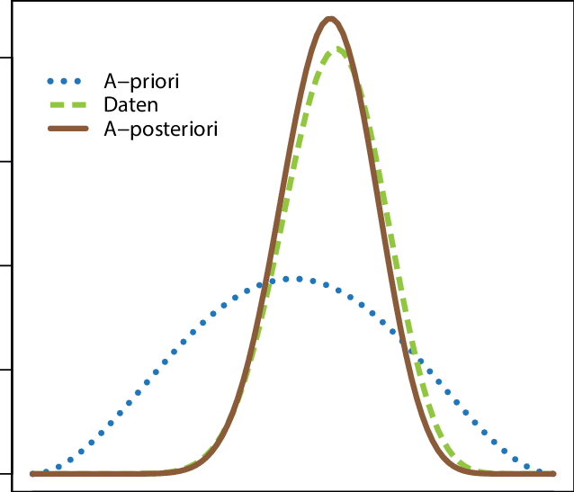 |
|---|
| Abbildung 5: Beispiel für die A-priori-Verteilung, die Likelihood-Funktion der Daten sowie die A-posteriori-Verteilung. |
3.3.2 Heterogenes Transfer Learning
Heterogenes Transfer Learning bezieht sich auf den Fall, in dem sich die Merkmale der Quell- und Ziel-Domänen unterscheiden, während die Labels und das Modell unverändert bleiben. Das Ziel besteht darin, die vorhandene Entsprechung zwischen den Domänen zu nutzen, um Wissen von einer Domäne auf die andere zu übertragen. Frühere Ansätze konzentrierten sich auf die Definition und Nutzung der Entsprechung auf Instanzebene. Aktuellere Ansätze zielen darauf ab, gemeinsame Repräsentationen der Quell- und Ziel-Domänen zu finden, entweder durch Matrixfaktorisierung, RBM-basiertes latentes Faktorlernen oder durch die Kombination von Deep Learning und Transfer Learning. Eine besondere Herausforderung besteht darin, aus sehr unterschiedlichen Aufgaben zu lernen, bei denen sich der Labelraum von der Ziel-Domäne unterscheidet. Das Lernen von Korrespondenzen zwischen solchen unabhängigen, aber analogen Domänen ist für Maschinen schwierig, obwohl Menschen dazu neigen, Analogien leichter zu erkennen. Aktuelle Fortschritte im Bereich des Deep Learning bieten jedoch neue Möglichkeiten durch ein einheitliches Framework für Representation Learning und Multitask Learning.
Multitask-Learning
| 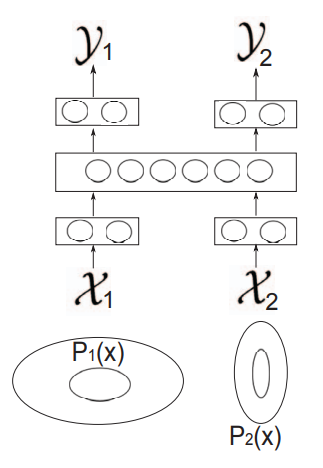 |
|---|
| Abbildung 6: Grafische Darstellung von Multitask Learning |
Multitask Learning bezieht sich auf den Fall, in dem die Merkmalsräume der Quell- und Ziel-Domänen identisch, jedoch die Aufgabenlabels signifikant unterschiedlich sind. Bei diesem Ansatz wird angenommen, dass die Quell- und Ziel-Aufgaben eng miteinander verbunden sind und das Lernen einer Aufgabe das Lernen der anderen Aufgabe in Form einer gegenseitigen Regularisierung unterstützt. Multitask Learning ist ein allgemeiner Ansatz, der auf verschiedene Modelle angewendet werden kann, einschließlich Kernel-Regression und k-nearest neighbor. Die Bewertung der Relevanz von zwei Aufgaben ist eine Herausforderung, und es gibt interessante Ansätze, die die Überlappung verschiedener Aufgaben im selben semantischen Raum zur Schätzung der Relevanz verwenden.
Eine Möglichkeit eine solche Schätzung durchzuführen ist es einen Score für die Überlappung der semantischen Räume zu definieren:
| 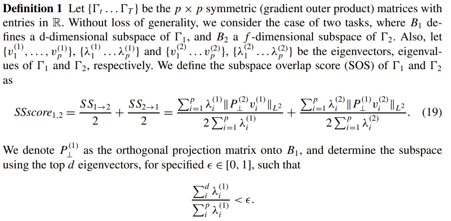 |
|---|
| Abbildung 7: Definition eines Überlappungsscores der semantischen Räume bei Multitask-Learning |
Der hier definierte Score weist einen Wert zwischen 0 und 1 auf. Eine starke Überlappung weist einen Wert nahe 1 auf.
3.4 Deep Transfer Learning
Deep Learning hat einen starken Einfluss auf Transfer Learning, insbesondere in den Bereichen der gesprochenen und geschriebenen Sprache. Es umfasst verschiedene Modelle wie Deep Belief Networks, Deep Boltzmann Machines, Deep Autoencoders, Deep Neural Networks und Deep Recurrent Neural Networks. Diese Modelle sind in der Lage, mehrschichtige Repräsentationen zu lernen, die eine hierarchische Verarbeitung von Informationen nachahmen. Das mehrschichtige Feature-Lernen bietet mehrere Vorteile, wie Robustheit gegenüber Datenvariationen, hierarchische Parameterverteilung, die Möglichkeit des Supervised Learnings und die Anpassungsfähigkeit an spezifische Aufgaben durch feinabstimmendes Training. Dadurch bietet Deep Learning einen geeigneten Rahmen für das Transfer Learning, bei dem robuste Features gelernt werden, die von mehreren Merkmalen und Aufgaben gemeinsam genutzt werden.
In einer beispielhaften Umsetzung von Deep Transfer Learning werden bei einem großen Modell die meisten Schichten bis zu einem gewissen Punkt eingefroren. Die Restlichen werden anschließend neu trainiert. In folgender Visualisierung wird dies illustriert:
| 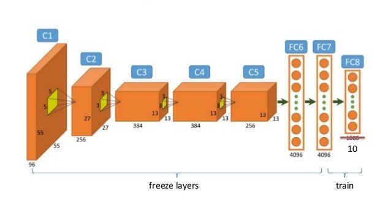 |
|---|
| Abbildung 8: Visualisierung von Deep Transfer Learning mit gefrorenen Schichten. |
Folgende Abbildung zeigt eine Transfer Learning Architektur, die auf tiefer Repräsentation basiert. Im linken Teil der Abbildung findet das gemeinsame Training statt, bei dem unterschiedliche Eingabemerkmale durch Vorverarbeitungsnetzwerke in einen gemeinsamen semantischen Raum projiziert werden. Die gemeinsamen Merkmale umfassen aussagekräftige Faktoren, die für mehrere Aufgaben verwendet werden können. Alleinstehend handelt es sich bei der linken Seite der Abbildung im Wesentlichen um ein Multitask-Learning.
Im rechten Teil der Abbildung wird die Anpassungsphase dargestellt, in der neue Daten für die Zielaufgabe bereitgestellt werden, entweder mit oder ohne Labels. Das Modell wird mit den neuen Daten aktualisiert, die einer anderen Verteilung folgen als in der gemeinsamen Trainingsphase.
| 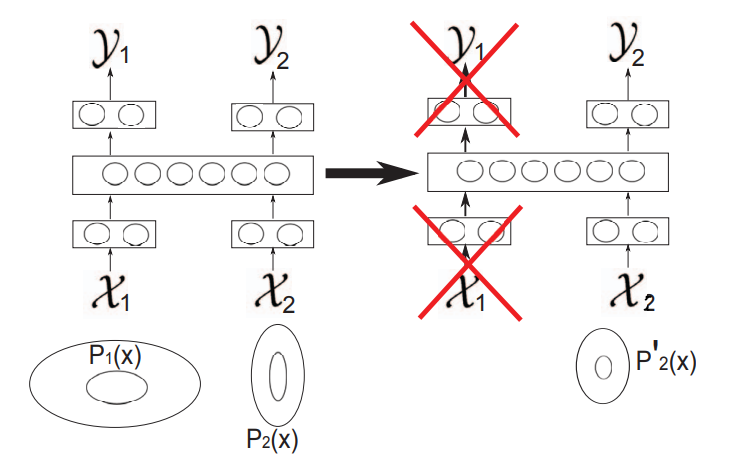 |
|---|
| Abbildung 9: Visualisierung von Deep Transfer Learning |
Ein großer Vorteil des Unsupervised Trainings ist die Fähigkeit, den Merkmalsextraktor ohne gelabelte Daten zu trainieren und somit den Bedarf an gelabelten Daten zu reduzieren. Durch Unsupervised Learning kann die überwachte Lernphase verbessert werden, indem Konvergenzgeschwindigkeit, Datenmenge und Modellqualität beeinflusst werden.
In der Studie "Domain adaptation for large-scale sentiment classification: A deep learning approach" von X. Glorot et al. wurden hochrangige Merkmale mittels Unsupervised Learning extrahiert. Die Ergebnisse zeigten, dass diese abstrakten Merkmale domänenunabhängig sind und erfolgreich auf neue Domänen übertragen werden können, ohne Anpassungen vorzunehmen. Ähnliche Ergebnisse wurden auch in anderen Studien erzielt, z.B. bei der Übertragung von CNN-basierten Merkmalen auf Bilderkennungsaufgaben. Es wurde gezeigt, dass nur wenige gelabelte Daten ausreichen, um Modelle anzupassen und unbekannte Objekte zu erkennen. In einigen Fällen kann sogar die Beziehung zwischen Eingangsdaten, Aufgabenvektor und Aufgabenlabels in einem Deep-Network erlernt werden, was zu Zero-Data Learning und Zero-Shot Learning führt.
3.5 Modelltransfer
Beim Transfer von Wissen zwischen Modellen gibt es verschiedene Ansätze. Ein häufig verwendetes Verfahren ist das Modelltransferverfahren, bei dem das im Quellmodell gelernte Wissen auf das Zielmodell übertragen wird. Dabei kann das Quellmodell beispielsweise ein Gaussian mixture model (GMM) sein, während das Zielmodell ein Deep Neural Network (DNN) ist. Das Wissen wird durch Initialisierung und Anpassung des Zielmodells mithilfe des GMM genutzt.
Ein weiterer Ansatz ist das Lehrer-Schüler-Modell, bei dem ein neues Modell von einem bestehenden Modell lernt. Das Lehrermodell enthält bereits reichhaltiges Wissen, das zur Anleitung des Schülermodells genutzt wird. Es gibt verschiedene Methoden, um das Wissen des Lehrermodells auf das Schülermodell zu übertragen.
Eine Möglichkeit ist das Abgleichen der Aktivierungen (Logit matching) des Schülermodells mit denen des Lehrermodells. Dabei werden die Logits verglichen, um eine möglichst geringe quadratische Abweichung zu erzielen. Eine andere Methode ist die Verwendung von "dark knowledge", bei der die Ausgaben des Schülermodells an die Ausgaben des Lehrermodells angepasst werden. Im Folgenden wird erklärt, wie hier die loss function errechnet wird.
Die Loss Funktion des Schülermodells wird wie folgt errechnet:
| 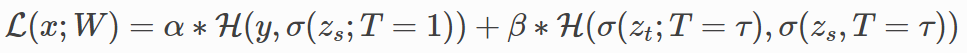 |
|---|
| Abbildung 10: Formel zur Errechnung der Loss Funktion des Schülermodells mit Hilfe von Dark Knowledge Destilation |
| 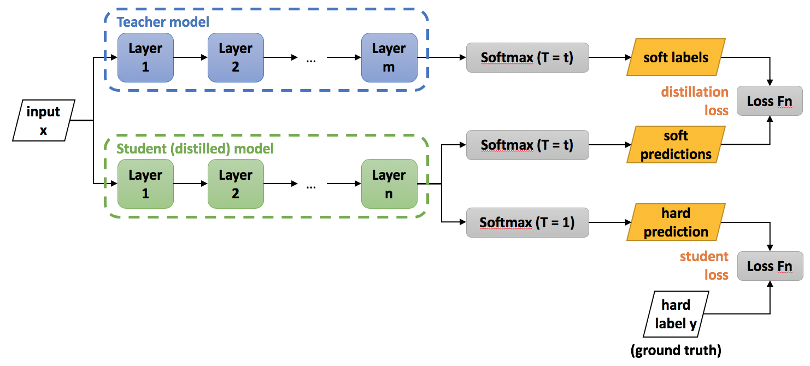 |
|---|
| Abbildung 11: Roadmap zum besseren Verständnis der Formel |
| Variable | Beschreibung |
|---|---|
| L: | Loss function wird errechnet aus Schüler- und Lehrer- loss function |
| T: | “Temperatur Parameter” Wenn T=1: Softmax-Funktion, mit zunehmendem T wird die Wahrscheinlichkeitsverteilung, die von der Softmax-Funktion generiert wird, weicher und liefert mehr Informationen darüber, welche Klassen das Lehrermodell als ähnlicher zur vorhergesagten Klasse betrachtet hat. |
| H: | Cross Entropy loss function |
| W: | Child model Parameter |
| zs und zt: | Logits von Lehrer- und Schülermodell |
| τ, α und β: | Hyperparameter |
| σ: | Softmax Funktion |
| x: | Input |
| y: | Wahres Label |
4. Anwendungen
Im Folgenden wird anhand eines Beispiels die Vorgehensweise bei der Implementierung von Transfer Learning in der Sprachverarbeitung erläutert. Konkret geht es hierbei um die Implementierung einer Fake-News-Erkennung.
Zunächst ein kurzer Überblick über die einzelnen Phasen, welche wir durchlaufen werden. In Phase 1 werden die Daten visualisiert und vorbereitet. Phase 2 beschäftigt sich mit dem Large Language Model BERT, welches wir für unseren Anwendungsfall fine-tunen wollen. Es wird auf die ursprünglichen Anwendungsfälle eingegangen, wofür das Modell einst trainiert wurde. Anschließend wird das Modell angepasst, damit es für die Fake-News-Erkennung verwendet werden kann. Ein entscheidender Schritt im Transfer Learning ist das Einfrieren der einzelnen Schichten. Dies wird im Phase 4 erläutert bevor in Phase 5 das Modell trainiert wird. Zu guter Letzt muss das Modell noch evaluiert werden.
| 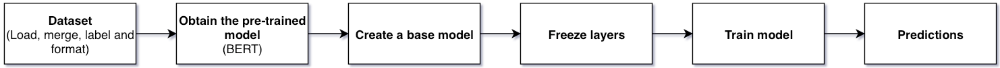 |
|---|
| Abbildung 12: Verschiedene Phasen der Code Demo |
4.1 Daten - Visualisierung
Beide Datensätze bestehen aus folgenden Variablen: - title: Entspricht der Schlagzeile des Artikels. Diese Variable wird später zum Trainieren verwendet. - text: Enthält den gesamten Text des Artikels. - subject: Beschreibt, wo der Artikel veröffentlicht wurde. - date: Datum der Veröffentlichung
Hierbei fällt auf, dass keine Variable Auskunft darüber gibt, ob der Artikel fake oder tatsächlich wahr ist. Bevor die Datensätze zusammengefügt werden, muss zunächst diese Variable generiert werden.
true_data['Target'] = ['True'] * len(true_data)
fake_data['Target'] = ['Fake'] * len(fake_data)
data = pd.concat([true_data, fake_data]).sample(frac=1).reset_index(drop=True)
data['label'] = pd.get_dummies(data.Target)['Fake']
Als Nächstes wurde die Verteilung der Daten visualisiert, um sicherzustellen, dass ein ausbalancierter Datensatz vorliegt. Mit einer Verteilung von 52,3 % Fake- und 47,7 % Echt-Daten, ist dies der Fall. Die Länge der Schlagzeilen wurde ebenfalls visualisiert. Diese wird später beim Tokenisieren noch eine Rolle spielen.
| 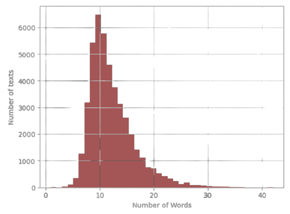 |
|---|
| Abbildung 13: Länge der Überschriften |
4.2 Daten - Vorbereitung
Wie bei jedem maschinellen Lernverfahren müssen die Daten in Trainings-, Validierungs- und Testdaten aufgeteilt werden. Da ein Modell mit Textdaten nicht arbeiten kann, müssen diese zunächst tokenisiert werden. Damit ist gemeint, dass die Wörter in sogenannte Tokens umgewandelt werden, welche wiederum numerische Repräsentationen darstellen.
Da wir das Sprachmodell BERT verwenden wollen, nehmen wir hierfür BertTokenizerFast, welcher speziell für das Modell entwickelt wurde. Dieser verwendet den WordPiece-Algorithmus, welcher auf der Idee basiert, häufig vorkommende Zeichenfolgen in einem Textkorpus zu identifizieren und sie zu einem neuen Wort zusammenzufügen.
Zusätzlich zum Text, welcher tokenisiert werden soll, sind folgende Parameter zu übergeben: - max_length: Dieser Parameter definiert die maximale Länge einer Sequence. Wenn wir uns die Grafik Länge der Überschriften nochmals genauer ansehen fällt auf, dass die meisten Schlagzeilen unter 20 Wörter haben. Um nicht unnötig große Datenmenge verarbeiten zu müssen, setzen wir die maximale Länge der Sequenzen daher auf diesen Wert. - padding: Da unser Modell mit einer bestimmten Anzahl an Tokens rechnet, müssen wir diesen Parameter auf true setzen. Dies sorgt dafür, dass Schlagzeilen welche weniger als 20 Wörter enthalten, am Ende der Sequenz mit Nullen aufgefüllt werden. - truncation: Es gibt allerdings auch Schlagzeilen mit mehr als 20 Wörtern. Wird dieser Parameter auf true gesetzt, so werden alle Sequenzen länger als der definierte Wert bei max_length abgeschnitten.
MAX_LENGTH = 20
tokenizer = BertTokenizerFast.from_pretrained('bert-base-uncased')
tokens_train = tokenizer.batch_encode_plus(
train_text.tolist(),
max_length=MAX_LENGTH,
padding=True,
truncation=True
)
tokens_val = tokenizer.batch_encode_plus(
val_text.tolist(),
max_length=MAX_LENGTH,
padding=True,
truncation=True
)
tokens_test = tokenizer.batch_encode_plus(
test_text.tolist(),
max_length=MAX_LENGTH,
padding=True,
truncation=True
)
Betrachten wir nun die Ausgabe des Tokenizers anhand eines Beispiels. Als Rückgabewert erhalten wir ein Dictionary mit drei key-value Paaren: - input_ids: Enthält die tokenisierten Sequenzen. Bei genauer Betrachtung fällt auf, dass diese jeweils mit dem Wert 101 starten und mit 102 enden. Das hat den Grund, dass diese Tokens keine Wörter darstellen, sondern dem Algorithmus den Anfang und das Ende einer Sequenz signalisieren. Des Weiteren kann der zuvor beschriebene Effekt des padding bei der zweiten Sequenz beobachtet werden. Hier wurden zwei Nullen an das Ende angefügt, damit Sequenz 1 und 2 die gleiche Länge haben. - token_type_ids: Wird beim Umgang mit Sequenzpaaren verwendet und gibt an welcher Token zu welchem Satz gehört. Dies ist für unseren Anwendungsfall jedoch nicht relevant. - attention_mask: Binäre Sequenz, die angibt, welche Token vom Modell berücksichtigt bzw. ignoriert werden sollen. Beispielsweise sollen die Einträge welche bei Sequenz 2 durch padding hinzugefügt wurden, nicht beachtet werden.
sample_data = ["Build a fake news detection model.",
"Using a bert model."]
tokenized_sample_data = tokenizer.batch_encode_plus(sample_data, padding=True)
print(tokenized_sample_data)
{'input_ids': [[101, 3857, 1037, 8275, 2739, 10788, 2944, 1012, 102], [101, 2478, 1037, 14324, 2944, 1012, 102, 0, 0]],
'token_type_ids': [[0, 0, 0, 0, 0, 0, 0, 0, 0], [0, 0, 0, 0, 0, 0, 0, 0, 0]],
'attention_mask': [[1, 1, 1, 1, 1, 1, 1, 1, 1], [1, 1, 1, 1, 1, 1, 1, 0, 0]]
}
Da wir nun wissen, welche Daten wir an das Modell übergeben müssen und wie diese aussehen, werden die Daten im nächsten Schritt zu Tensoren konvertiert. Dies ist notwendig, da wir mit der PyTorch-Bibliothek arbeiten wollen und diese auf Tensoren als grundlegende Datenstruktur für Berechnungen aufbaut. Des Weiteren verwenden wir einen sogenannten data loader, welcher uns beim Laden und Verwalten der Daten behilflich ist und uns diese in Batches aufteilt.
# Convert lists to tensors
train_seq = torch.tensor(tokens_train['input_ids'])
train_mask = torch.tensor(tokens_train['attention_mask'])
train_y = torch.tensor(train_labels.tolist())
# Crate data loader
batch_size = 32
train_data = TensorDataset(train_seq, train_mask, train_y)
train_sampler = RandomSampler(train_data)
train_dataloader = DataLoader(train_data, sampler=train_sampler, batch_size=batch_size)
4.3 BERT (Bidirectional Encoder Representations from Transformers)
Das bekannte Large Language Model Bert (Bidirectional Encoder Representations from Transformers) wird als Ausgangspunkt verwendet. Das Modell wurde 2018 von Google veröffentlicht und wurde mittlerweile für eine Vielzahl von NLP-Aufgaben eingesetzt. Ursprünglich wurde das Modell auf einem großen Textkorpus trainiert, welcher beispielsweise die gesamte Wikipedia (2.5 Milliarden Wörter) und den sogenannten BookCorpus (985 Millionen Wörter) enthält. Das Training wurde hierfür in zwei Phasen aufgeteilt: - Masked Language Modeling: In dieser Phase wurden 15 % der Wörter zufällig maskiert. Die Aufgabe bestand nun darin, die maskierten Wörter basierend auf dem Kontext vorherzusagen. Dabei lernte das Modell die Beziehungen zwischen Wörtern innerhalb von Sätzen. Nachfolgend befindet sich die beschriebene Funktion als ein ausführbares Codebeispiel.
unmasker = pipeline('fill-mask', model='bert-base-uncased')
text = "I will need an [MASK] because it is raining."
unmasker(text)
- Next Sentence Prediction: Als nächsten Schritt musste das Modell die Beziehungen zwischen Sätzen lernen. Hierfür wurde die Aufgabe so umgewandelt, dass das Modell vorhersagen sollte, ob zwei Sätze aufeinanderfolgen. Wie für die erste Phase wird auch hierfür ein Codebeispiel zur Verfügung gestellt. Das Modell soll vorhersagen, ob Satz 1 und 2 bzw. Satz 2 und 3 in einer Beziehung zueinander stehen.
model = BertForNextSentencePrediction.from_pretrained("bert-base-uncased")
tokenizer = BertTokenizer.from_pretrained("bert-base-uncased")
sentences = ["Elon Musk lives in California.", "You can't buy anything on sundays in germany.",
"You are not supposed to work on sundays in germany."]
for i in range(2):
inputs = tokenizer(sentences[i], sentences[i + 1], return_tensors="pt")
outputs = model(**inputs)
prediction = torch.argmax(outputs.logits)
if prediction == 0:
print("The sentences belong together.")
else:
print("The sentences do not belong together.")
4.4 Model
In Phase 3 erstellen wir ein Modell, welches die Architektur des BERT Modells als Grundlage verwendet. Um das Modell auf unseren Anwendungsfall anzupassen, fügen wir weitere Schichten hinzu. So werden beispielsweise zwei Linear-Layers hinzugefügt, um die Anzahl der Ausgänge auf zwei (Fake/Wahr) zu reduzieren. Ebenfalls wird die Regularisierungstechnik Dropout angewandt, um Overfitting vorzubeugen.
In der forward Funktion wird definiert, wie die Eingabe durch das Modell fließt und die Ausgabe berechnet wird.
class BERT_Arch(nn.Module):
def __init__(self, bert):
super(BERT_Arch, self).__init__()
self.bert = bert
self.dropout = nn.Dropout(0.1)
self.relu = nn.ReLU()
self.fc1 = nn.Linear(768, 512)
self.fc2 = nn.Linear(512, 2)
self.softmax = nn.LogSoftmax(dim=1)
def forward(self, sent_id, mask):
cls_hs = self.bert(sent_id, attention_mask=mask)['pooler_output']
x = self.fc1(cls_hs)
x = self.relu(x)
x = self.dropout(x)
x = self.fc2(x)
x = self.softmax(x)
return x
4.5 Einfrieren der Schichten
Beim Transfer Learning werden oft bestimmte Schichten des vortrainierten Modells eingefroren, um die Gewichte während des Trainings nicht zu aktualisieren. Dies wird aus folgenden Gründen gemacht: - Schutz des bereits gelernten Wissens - Reduzieren der Trainingszeit - Prävention vor Overfitting
Besonders nützlich ist dies, wenn die ursprüngliche Aufgabe Ähnlichkeiten mit der neuen Aufgabe aufweist. Es gibt drei verschiedene Ansätze welche verfolgt werden können. Im Folgenden werden diese stichpunktartig beschrieben. 1. Keine Schichten einfrieren: 1. Es wird das gesamte Modell trainiert 2. Großer Datensatz benötigt 3. Die ursprüngliche Aufgabe unterscheidet sich stark von der neuen Aufgabe
- Teilweises einfrieren der Schichten:
- Es werden nur die unteren Schichten eingefroren
- Die oberen Schichten werden trainiert
-
Mittelgroßer Datensatz notwendig
-
Alle Schichten einfrieren:
- Alle Schichte des vortrainierten Modells werden eingefroren
- Nur die aufgabenspezifische Schichten werden trainiert
- Kleiner Datensatz
- Ähnlichkeiten zwischen ursprünglicher und neuer Aufgabe sind vorhanden
Für unseren Anwendungsfall wählen wir Methode 3. Hierfür iterieren wir über die einzelnen Schichten des BERT Modells und setzten den Parameter requires_grad jeweils auf den Wert false. Dadurch wird verhindert, dass der Gradient während des Trainings berechnet und die Gewichte aktualisiert werden.
for param in bert.parameters():
param.requires_grad = False
4.6 Fine-Tuning
Wie es für Pytorch üblich ist, müssen nun die Trainings- und Evaluierungsschleife implementiert werden. In der Trainingsschleife erfolgt pro Iteration der gleiche Ablauf: 1. Datenbereitstellung: Die Eingabedaten und die Labels werden aus den aktuellen Batch extrahiert. 2. Vorwärtsdurchlauf: Die Eingabedaten werden in das Modell gegeben, welches Vorhersagen generiert. 3. Fehlerberechnung: Es folgt ein Abgleich der vorhergesagten Werte mit den tatsächlichen Werten. 4. Rückwärtsdurchlauf und Gewichtsaktualisierung: Der Backpropagation-Algorithmus wird verwendet, um die Gradienten der Gewichte des Modells zu berechnen. Der Optimizer nutzt diese Gradienten, um die Gewichte entsprechend anzupassen und das Modell zu optimieren.
Ähnlich verhält sich die Evaluierungsschleife, mit dem Unterschied, dass der Rückwärtsdurchlauf nicht durchgeführt wird.
def train():
model.train()
total_loss, total_accuracy = 0, 0
for step, batch in enumerate(train_dataloader):
if step % 50 == 0 and not step == 0:
print(' Batch {:>5,} of {:>5,}.'.format(step, len(train_dataloader)))
input_id, mask, labels = batch
model.zero_grad()
preds = model(input_id, mask)
loss = cross_entropy(preds, labels)
total_loss = total_loss + loss.item()
loss.backward()
torch.nn.utils.clip_grad_norm_(model.parameters(), 1.0)
optimizer.step()
avg_loss = total_loss / len(train_dataloader)
return avg_loss
Nachdem das Modell trainiert wurde, ist es an der Zeit die Performance des Modells auf den Testdaten zu überprüfen. Die folgende Tabelle zeigt die erhaltenen Metriken:
| precision | recall | f1-score | support | |
|---|---|---|---|---|
| 0 | 0.99 | 0.99 | 0.99 | 3212 |
| 1 | 0.99 | 0.99 | 0.99 | 3523 |
| accuracy | 0.99 | 6735 | ||
| macro avg | 0.99 | 0.99 | 0.99 | 6735 |
| weighted avg | 0.99 | 0.99 | 0.99 | 6735 |
4.7 Inference
Um mit dem Modell Vorhersagen machen zu können, müssen folgende Schritte durchgeführt werden: 1. Tokenisieren der Schlagzeile
unseen_news_text = ["Donald Trump Sends Out Embarrassing New Year’s Eve Message; This is Disturbing"]
MAX_LENGTH = 20
tokenizer = BertTokenizerFast.from_pretrained('bert-base-uncased')
tokens_unseen = tokenizer.batch_encode_plus(
unseen_news_text,
max_length=MAX_LENGTH,
padding=True,
truncation=True
)
unseen_seq = torch.tensor(tokens_unseen['input_ids'])
unseen_mask = torch.tensor(tokens_unseen['attention_mask'])
preds = model(unseen_seq, unseen_mask)
preds = np.argmax(preds, axis=1)
for idx, pred in enumerate(preds):
if pred == 0:
print(f"Headline {idx+1} is True")
continue
print(f"Headline {idx+1} is Fake")
5. Fazit
Transfer Learning in der Sprachverarbeitung hat sich als eine vielversprechende Methode erwiesen, um die Leistung von Sprachmodellen zu verbessern. Es ermöglicht die Anwendung vortrainierter Modelle auf neue sprachverarbeitende Aufgaben, indem das bereits erworbene Wissen auf eine andere, verwandte Aufgabe übertragen wird. In den letzten Jahren wurden bedeutende Fortschritte im Bereich des Transfer Learning in der Sprachverarbeitung erzielt, insbesondere mit Hilfe von Deep Learning-Modellen wie BERT.
Die Anwendung von Transfer Learning bietet eine Reihe von Vorteilen. Es verkürzt nicht nur die Trainingszeit erheblich, sondern reduziert auch den Bedarf an umfangreichen Datenmengen. Durch die Nutzung vortrainierten Wissens, das in einem anderen Kontext erworben wurde, kann die Genauigkeit von Spracherkennungssystemen verbessert werden, selbst wenn nur begrenzte Daten zur Verfügung stehen. Transfer Learning ermöglicht die Entwicklung maßgeschneiderter Modelle für spezifische sprachverarbeitende Aufgaben und findet Anwendung in verschiedenen Bereichen wie der Sprachbefehlserkennung, der Transkription von Audioaufnahmen und der automatisierten Analyse von Sprachanrufen.
Der aktuelle Stand der Forschung zeigt das Potenzial dieser Technik. Forscher haben verschiedene Ansätze und Techniken entwickelt, um die Effizienz und Genauigkeit von Spracherkennungssystemen weiter zu verbessern. Die Kombination von Transfer Learning mit Active Learning, Reinforcement Learning und Generative Adversarial Networks eröffnet neue Möglichkeiten, um die Leistungsfähigkeit der Systeme zu steigern. Die Erweiterung des Transfer Learning auf mehrsprachige Szenarien ermöglicht eine verbesserte Spracherkennung in verschiedenen Sprachen.
Die Implementierung erfordert eine sorgfältige Vorbereitung der Daten, die Auswahl geeigneter vortrainierter Modelle und die Anpassung des Modells an die spezifische Aufgabe. Das Einfrieren bestimmter Schichten des vortrainierten Modells während des Trainings kann den Schutz des bereits gelernten Wissens gewährleisten und die Trainingszeit reduzieren. Durch das Fine-Tuning des Modells können optimale Ergebnisse erzielt werden.
Insgesamt ist Transfer Learning ein vielversprechender Ansatz, um präzisere und effizientere Spracherkennungssysteme zu entwickeln. Mit weiteren Fortschritten in der Forschung und der Anwendung von Deep Learning-Modellen wird Transfer Learning eine immer wichtigere Rolle in der künstlichen Intelligenz und im maschinellen Lernen spielen. Es eröffnet neue Möglichkeiten für die Verbesserung von Spracherkennungssystemen und hat das Potenzial, unsere tägliche Interaktion mit sprachbasierten Technologien weiter zu verbessern.
6. Weiterführendes Material
6.1 Podcast
Der Campus Talk - Silicon Forest
6.2 Talk
6.3 Demo
6.4 Literaturliste
S. Thrun and L. Pratt, Learning to learn. Springer Science & Business Media, 2012.
R. Caruana, “Multitask learning,” Machine learning, vol. 28, no. 1, pp. 41–75, 1997.
B. Wei and C. J. Pal, “Heterogeneous transfer learning with RBMs.” in AAAI, 2011.
H.-Y. Wang and Q. Yang, “Transfer learning by structural analogy,” in AAAI. Citeseer, 2011.
Knowledge Distillation, 2023.07.06
Preprocess data for Natural Language Processing
An Explanatory Guide to BERT Tokenizer
Transfer Learning Guide: A Practical Tutorial With Examples for Images and Text in Keras